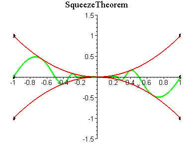
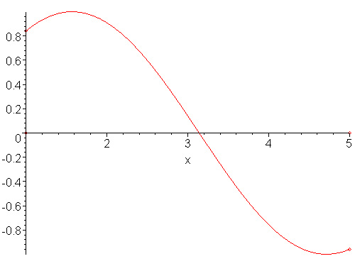

MAT100 for ELK og KOM
Uke 4
12.09.2016
Alexander Lundervold
institutt for data- og realfag
Sist uke
- P.6: Polynomer og rasjonale funksjoner
- P.7: Trigonometriske funksjoner
- Kap. 1.1–1.2: Grenseverdier til funksjoner
Les gjennom 1.1 på egenhånd
Denne uken
- Fra 1.2: Skviseteoremet
- 1.3: Grenser i det uendelige og uendelige grenser
- 1.4: Kontinuitet
- Den deriverte!
Funksjoner og grenser
Sist: Gikk gjennom ideen bak grenseverdier. Brukes til å si noe om oppførsel til funksjon i nærheten av punkt.
\[\lim_{x\rightarrow a} f(x), \quad \lim_{x\rightarrow a^-} f(x), \quad \lim_{x\rightarrow a^+} f(x)\]Skviseteoremet

Se også her: Squeeze Theorem (Wolfram)

{kind=link}

Motivasjon:
MAT100 og MAT106 omhandler KALKULUS, dvs. forandring og forhold mellom funksjoner
Derivasjon:


Posisjon $x(t)$, hastighet $v(t)$, akselerasjon $a(t)$:
Prøv dette spillet. Forsøk å se for deg vektorene (kreftene) og endringsratene som bestemmer kjøretøyets oppførsel. (Krefter som skrus av og på av piltastene).

Strøm: endringsrate av ladning:
$I(t) = Q'(t)$
Derivasjon
Stigning til tangent:
Derivasjon
Funksjonen $y = |x|$ er ikke deriverbar i $x=0$: